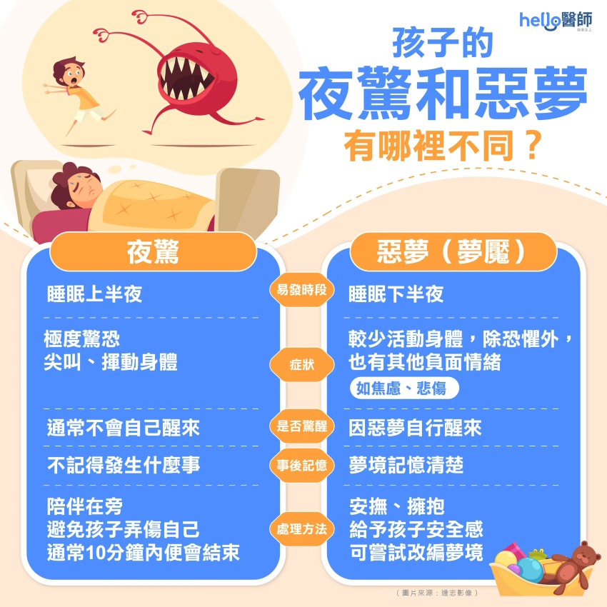

月號－哺乳育嬰站
月號－哺乳育嬰站夜驚（night terror），顧名思義就是睡覺睡到一半，孩子忽然表現得非常驚恐、尖叫哭鬧的情況，可能伴隨呼吸急促、心跳加速、盜汗等症狀；另一個叫做惡夢（nightmare），惡夢應該就不用多解釋了。不管是夜驚或是惡夢，對家長而言，都是不小的困擾，畢竟在夜闌人靜的時候，孩子突如其來的尖叫大哭，不只嚇到爸爸媽媽，恐怕也會造成鄰居的抗議。 |
| 夜驚和惡夢沒有關係，是大腦在搞鬼！ |
要了解夜驚跟惡夢的分別，我們要知道一晚的睡眠中可以分為不同的階段- 快速動眼期睡眠和非快速動眼期睡眠。快速動眼睡眠屬於較淺層的睡眠，夢境通常於這個階段發生，所以我們較容易記得夢境的內容。而非快速動眼睡眠屬於較深層的睡眠，一般較少作夢，亦較難記住夢的內容。 惡夢通常發生於睡夢的時段，即快速動眼睡眠的階段。當從惡夢中驚醒時，意識上很快變得清醒，亦能記得剛剛的內容；相反，夜驚通常發生於較深層睡眠的階段，處於半睡半醒狀態的時候，過後亦記不起晚上發生的事情。 |
| 夜驚原因 |
夜驚起因於孩童大腦發育尚未成熟、神經調節異常，夜驚通常發生於深眠期間，也就是睡眠週期的非快速動眼期之第3階段，好發於12歲以下兒童，特別是1~2歲幼童。 若孩童放假出遊作息紊亂、缺少午睡，或是玩樂時間過於亢奮，便可能導致晚上深眠時間拉長，進而引起夜驚。不過當孩童進入青春期後，發生次數就會逐漸減少。但青少年或成人也可能因孩童時曾發生過夜驚，或有過暴力或其他不堪的記憶，因此對睡眠感到恐懼或壓力，而復發夜驚。 除了上述原因外，其他任何可能導致睡眠異常的因素皆可能引起小孩或成人夜驚，其常見的因素包括： |
|  |
| 夜驚症治療、改善及處理方法 |
夜驚一般不需要特別的治療和處理。當夜驚出現時，家長先要保持冷靜，除非小朋友可能傷害到自己，否則不需刻意叫醒孩子。若然硬將他們叫醒，可能會使孩子更難平復下來。同時家長需確保家居安全，例如鎖好門窗，移開雜物以免孩子受傷。家長可協助孩子培養良好的睡眠習慣，盡量避免讓他們過度疲勞。 孩子醒來對夜驚沒有太大的印象，所以無需不停追問孩子能否記得晚上發生的事情，以免他們對睡眠產生恐懼。大部分小朋友隨年紀長大，大腦發育成熟後夜驚的情況便會改善。若然夜驚情況持續以致影響小朋友日間的表現、或於夜驚時出現傷害自己或他人的風險，請向家庭醫生或專科醫生求助。 |
| 資料來源 1.小孩夜驚半夜哭鬧？黃瑽寧：認識夜驚原因與改善方法–親子天下 2.夜驚症|醫生拆解夜驚症原因及表現 4個改善小孩夜驚的方法|夜驚症與發惡夢分別 - 謝結儀精神科專科醫生 3.小孩半夜哭鬧免收驚，超過4成小孩會「夜驚」！認識夜驚原因及預防方法 –Hello醫師 |